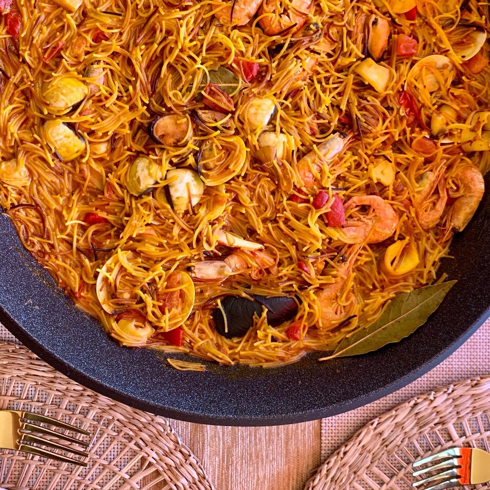

← Menú
Fideuá
Ingredientes
180 g de fideos muy finos "cabello de ángel"
300 ml de fumet o caldo para paella de marisco
½ bandeja de marisco congelado
2 cucharadas de tomate frito
3 dientes de ajo
Preparación
Tostar fideos.
Calentar 2 cucharadas de
aceite
a fuego bajo y echar los
fideos
para que se tuesten — cogerán color en apenas 30 segundos. Sacarlos y dejarlos en un plato.
En el paellero.
Calentar 2 cucharadas de
aceite
de nuevo y echar los
ajos
pelados a lo largo, el
marisco y el tomate frito
. Cuando esté dorado echar el
fumet
y hervir bajo 15 min.
Echar los fideos.
Echar los
fideos
y apagar en 3 min. Añadir
agua
si hace falta para que al apagar quede una mezcla caldosa que chisporrotea.
